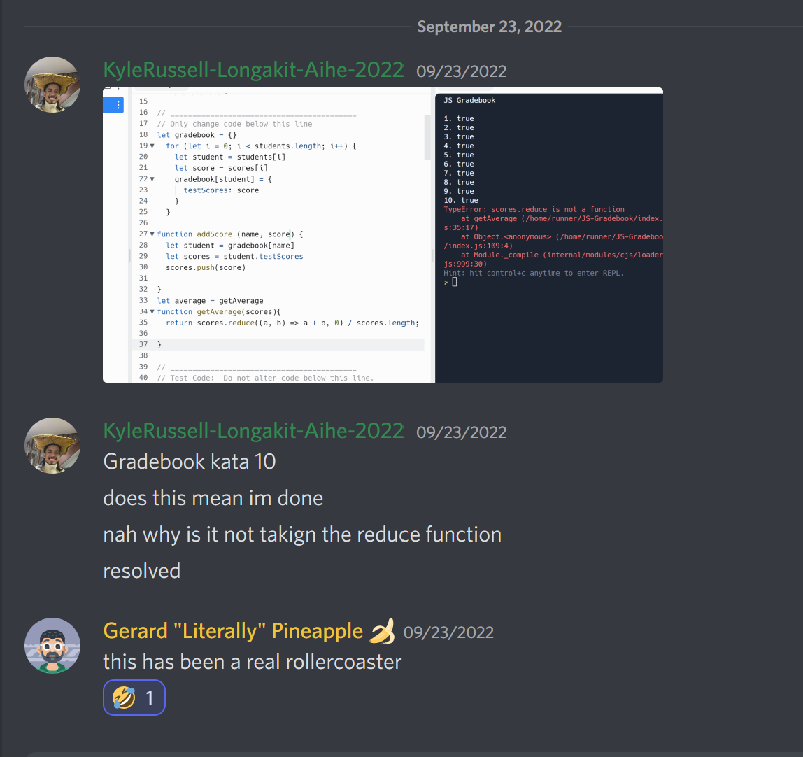

Problem solving
How's it going?
It's going. Two weeks into learning javascript and wow is it a challenge, so many new concepts
while building on fundamentals; my mental fortitude got tested. At one point I was so tunnel-visioned
I was working on an exercise while completely forgetting the brief, I was reverse engineering a challenge
through the error messages I was getting. It was no surprise I went over the timeboxes after the first two Repls,
but what surprised me was how less stressed I was in comparison to the first week of learning javascript. What really
helped me grasp the concepts I was having difficulty with was Brennan, a fellow student; he was able
to frame the logic of what I was doing in a way that I understood very easily.(legend)
It got me thinking to back in sprint 1 where these methods first got introduced to us, and the difference
in my confidence in applying them then and now.
So naturally, I HAD to make a chart.

I rated myself out of 100 for all the problem-solving methods, for both sprints 1 and 4. Over the past few weeks I
am more confident in my pseudo-code and in reading error messages, although most of it still looks like a bunch of random
characters; I am starting to speak computer. Since there's no better way to learn a language than conversing with a
native speaker, I talked to my computer alot this sprint. A LOT
Ever since working with javascript I have console logged a whole heap more than I did in sprint 1 when it was exclusively
HTML and CSS, so in a way I guess javascript helped me in the end. Right? I have always been confident in googling and asking
for help in discord and both are ways that I have always resorted to, and I am a lot more confident in trying new
stuff now.
This week has been a wild ride, and my problem-solving skills have really stepped up to the plate this sprint; my ability
to identify the problem, execute an elegant fix, and employ multiple techniques simultaneously really
surprised me. All this can be seen in the screenshot below:

But in all seriousness, what you see is not where I want to be, I want that chart to be as full of yellow as it can be. I
am excited for what this course has in store for me, and where it will take me; and I'm here for it.
A wise man once told me progress, not perfection.